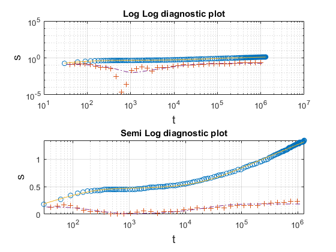
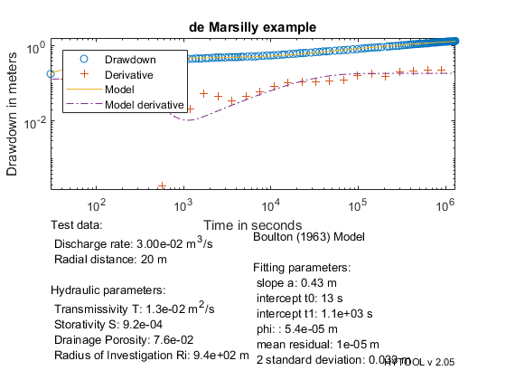

Boulton interpretation.
This is a demonstration of the interpretation with Boulton (1963) model for unconfined aquifer of a pumping test in coastal aquifer
MIT License Copyright (c) 2017 Philippe Renard - University of Neuchâtel (CHYN)
Contents
Load the data
The data set for this example has been provided by: G. de Marsily, cours DEA Paris 6, "Aquifère côtier de Nefza, Tunisie". Piezometer A3
clear; clf; clc
| HYTOOL Demo |

Model parameter identification
We see visually that the fit has been improved. The values of the parameters have slightly changed.
p0=blt_gss(t,s); p=fit('blt',p0,t,s); trial('blt',p,t,s)
Norm of Norm of
Iteration SSE Gradient Step
-----------------------------------------------------------
0 0.350211
1 0.0997772 235.155 212.343
2 0.0593958 2674.66 248.594
3 0.0363204 889.178 187.236
4 0.0348145 42.6602 45.2004
5 0.0348099 0.747206 5.63838
6 0.0348098 0.0172322 0.809182
7 0.0348098 0.0010357 0.170853
8 0.0348098 0.21587 9.75401e-16
Iterations terminated: relative norm of the current step is less than OPTIONS.TolX
Warning: The Jacobian at the solution is ill-conditioned, and some model
parameters may not be estimated well (they are not identifiable). Use caution
in making predictions.
 Reporting the results
q=0.030; % Pumping rate in m3/s r=20; % radial distance in m blt_rpt(p,t,s,[q,r],'de Marsilly example')